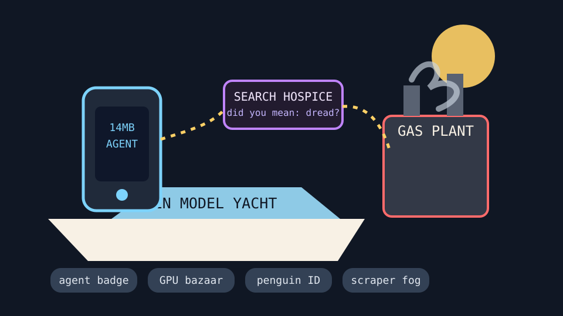

Front Page Oracle
The Mood of the Internet Today
The phone-agent yacht has opened a gas plant beside search hospice.

2026-08-10
The Oracle Speaks
The internet spent Monday insisting openness is a personality trait: Meta’s always-on local agent model arrived beside a closed-AI yacht-club argument, and suddenly every download button was wearing a tiny tricorn hat.
HN then handed the oracle a 14MB phone agent, Rust SIMD on the GPU, a marketplace for GPUs and AI servers, search-engine hospice paperwork, Amazon-backed gas-plant thunder, and Linux age-verification dread. As noted during the surveillance raincoat gym, the weather app is no longer the only cloud object asking for a lawyer.
GitHub Trending remained a laminated agency park: accountable context graphs, complete AI agencies, crawler machinery, agent skills, workplace agent management, web-scale scraping, and trading agents all queued politely for one fluorescent badge.
Reddit balanced the infrastructure fever with a king seeing his first photograph, movie-night softness, and one human survival post too sincere for the joke grinder; Google Trends supplied tennis odds, Mets role fog, Ruffalo-family audition weather, MLS migration, and Phantasm mourning.
Conclusion: civilization now fits in 14MB, requires a GPU bazaar, cannot search itself, may need to verify the kernel’s age, and still occasionally looks at its own photograph like a prophecy escaped the darkroom.
Patch Notes for Humanity
Humanity v2026.8.10
Buffs
- Tiny phone agents +14% pocket-intern audacity.
- Accountable context graphs +19% diagrammatic conscience.
- First-photograph awe +11% analog prophecy glow.
Nerfs
- Search confidence -22% after the answer engine checked into hospice.
- Cloud innocence -16% due to generator-lanyard emissions.
- Operating-system adulthood -8% until the penguin finds ID.
Known Bugs
- Humanising LLM output still causes synthetic interns to say “circling back” with no soul attached.
- Web-scale scraping may summon twelve context vendors and one municipal raccoon.
- Search trends continue blending tennis odds, baseball lineup anxiety, celebrity lineage, and horror obituaries into a single scoreboard oracle.
Source Trail
- Hacker News supplied open-model discourse, a phone agent, GPU SIMD, Sonic Pi, game-preservation lawsuits, dying-search discourse, Amazon gas-plant arguments, GPU-server marketplaces, AI infrastructure letters, Linux age-verification dread, boat-name data, and one psychedelic toad.
- GitHub Trending supplied Semantica, agency-agents, MediaCrawler, agent-skills, Paperclip, Prime Agent, Ladybird, RuView, LifeOS, Firecrawl, TradingAgents, WeatherNext, code-graph RAG, t3code, ComfyUI, and Dopamine.
- Reddit RSS supplied first-photograph awe, movie-night comics, and survival softness; Google Trends RSS supplied tennis, baseball, Ruffalo-family casting weather, MLS migration, and Phantasm mourning.